คู่มือ DRAKO GAUGE
ภาพทั้งหมดจับจากจอจริงใน Honda Civic FC 2017 ระหว่างขับทดสอบ
1. เริ่มใช้
- ติดตั้ง: ที่หน้าติดตั้ง เสียบบอร์ดกับคอมหรือมือถือ Android แล้วกด "เชื่อมต่อบอร์ดและติดตั้ง" ประมาณ 1–2 นาที
- ตั้งทัช (ครั้งแรกครั้งเดียว): แตะกลางเครื่องหมาย + ทั้ง 4 จุด แล้วแตะ OK · อยากตั้งใหม่: ตอนเปิดเครื่องแตะภาพโลโก้ค้างไว้
- ต่อรถ: เสียบ ELM327 Bluetooth ที่ช่อง OBD (ใต้คอนโซลฝั่งคนขับ) ติดเครื่องรถ เกจหาเองภายใน 10–30 วินาที ปุ่มมุมขวาบนเป็น OBD สีเขียว = อ่านค่ารถอยู่
- หาไม่เจอ: แตะ ≡ มุมซ้ายบน › จับคู่ OBD › แตะชื่อ ELM327 (รหัส 1234)
- ไม่มีรถ อยากลองดู: กดปุ่ม OBD มุมขวาบนค้าง 2 วินาที = โหมดจำลอง ทุกค่าเดินเหมือนขับจริง ไม่บันทึกอะไร กดค้างอีกครั้งเพื่อออก
2. หน้าหลัก
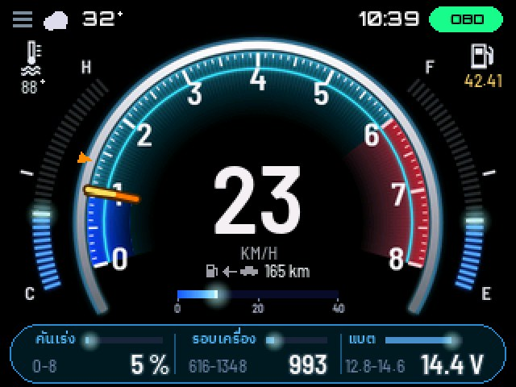
- ตรงกลาง: ความเร็ว km/h · แตะกลางจอ = สลับเป็นรอบเครื่อง
- วงนอก: เข็มรอบเครื่อง 0–8 (ดีเซล 0–5) ช่วงสีแดง = รอบสูง
- ซ้าย C–H: ความร้อนน้ำ ขีดกลาง = 100°C (ตัวเลขจริงอยู่มุมซ้ายบน)
- ขวา E–F: น้ำมันในถัง เป็นสีแดงเมื่อเหลือ 2 ขีดสุดท้ายหรือต่ำกว่าที่ตั้งเตือน
- ใต้ความเร็ว: วิ่งได้อีกกี่ กม. และแถบ km/L ตอนนี้ (0–40) · น้ำมันใกล้หมดจะขึ้น "น้ำมันใกล้หมด" แทน
- 3 ช่องล่าง: แตะช่อง = เลือกค่าที่จะแสดง มีค่าต่ำ–สูงตั้งแต่เปิดเครื่อง
- แถบบน: สภาพอากาศ นาฬิกา และราคาน้ำมันวันนี้ (หลังเชื่อม Hotspot มือถือ)
- แจ้งเตือน: ขึ้นเป็นแถบด้านบนเท่านั้น แตะแถบ = ปิด · จอไม่เปลี่ยนหน้าเอง
3. หน้าอื่นๆ
เปลี่ยนหน้า: ปัดซ้าย/ขวา หรือแตะขอบซ้าย/ขวาของจอ · ปรับความสว่าง: ปัดขึ้น/ลง
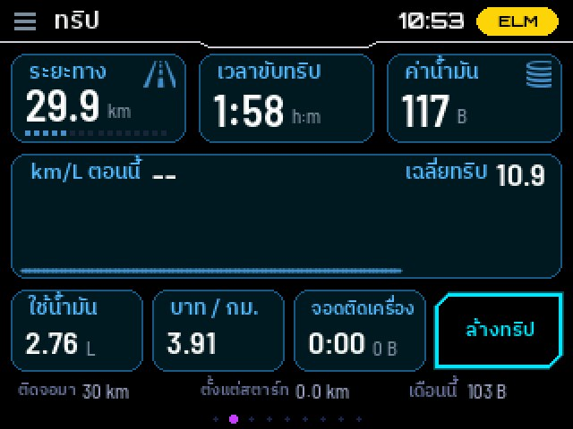
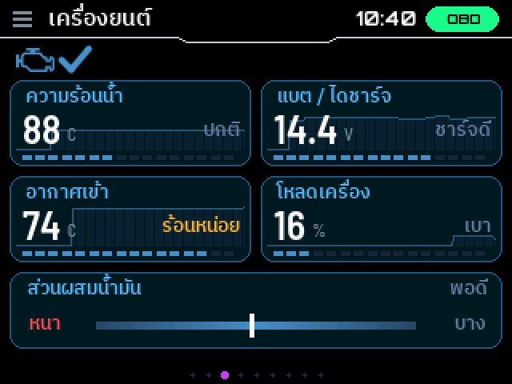
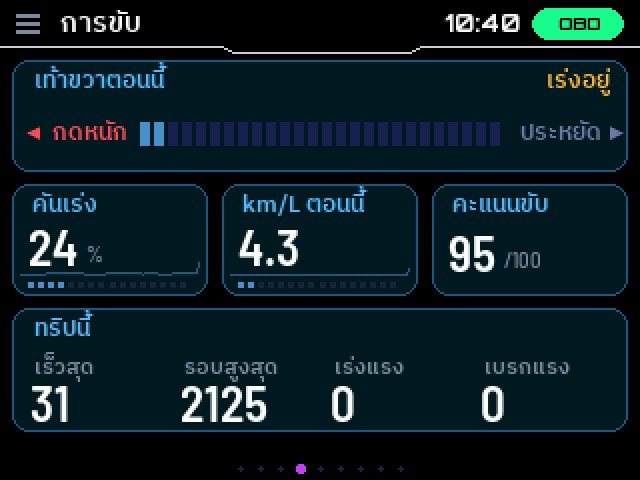
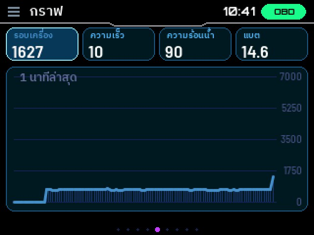
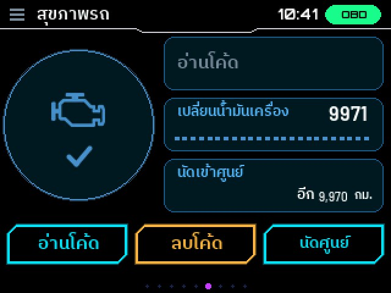
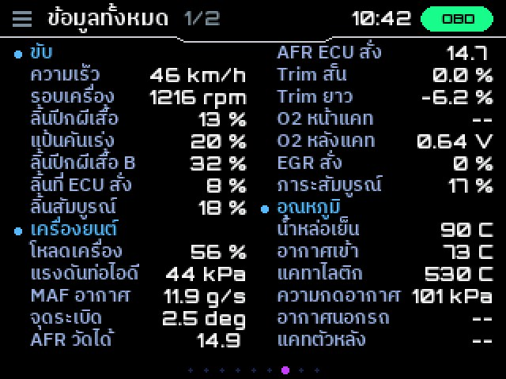
4. เลือกค่าที่จะแสดง (3 ช่องล่างหน้าหลัก)
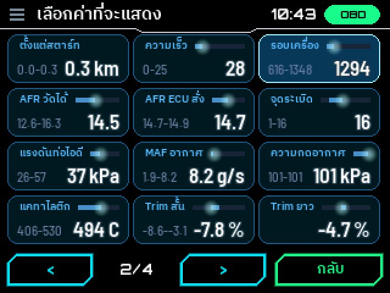
- แต่ละช่องมีชื่อ แถบเล็ก (ค่าตอนนี้บนสเกลของมัน) ค่าต่ำ–สูง และตัวเลข
- เลือกค่าที่อยู่อีกช่องแล้ว = สองช่องสลับที่กัน (ไม่มีค่าซ้ำ)
- ค่าที่รถคันนั้นไม่ส่งมา จะไม่อยู่ในรายการ (หลังต่อรถแล้ว)
- กราฟเส้นย้อนหลังในช่อง: ≡ › จอ › กราฟในช่องค่า (ปิดอยู่ เปิดได้ เลือกสีได้)
5. เกจน้ำมัน ทำงานยังไง รุ่นทดลอง Beta
ค่าที่รถส่งมาคือตำแหน่งลูกลอยในถัง ซึ่งแกว่งตอนขับและเพี้ยนตอนจอดเอียง เกจจึงคิดเอง:
- ระหว่างขับ: ลดตามน้ำมันที่เครื่องเผาจริง ไม่กระโดดตามน้ำมันกระฉอก
- ตอนจอดนิ่ง / เปิดเครื่อง: ตรวจกับค่าของรถ รับเฉพาะค่าที่ต่ำลง (น้ำมันเพิ่มเองไม่ได้นอกจากเติม)
- เติมน้ำมัน: จอดแล้วค่าขึ้นชัดเจน = เติม ขึ้นแถบ "เติมน้ำมัน +x L ~y B"
- เรียนรู้ถังรถคุณเอง: ถังรถแต่ละรุ่นรูปทรงไม่เหมือนกัน เกจเทียบน้ำมันที่เผากับลูกลอยทุกครั้งที่จอด ยิ่งขับยิ่งแม่น (ประมาณ 1 ถัง) ไม่ต้องตั้งอะไร
- ให้ตรงหน้าปัดรถ: ≡ › น้ำมันและศูนย์ › "น้ำมันที่ขีด E" (ปกติ 0) และ "เตือนน้ำมันต่ำ" (% ของเกจ) · ตั้งความจุถังที่ ≡ › รถ
- น้ำมันใกล้หมด: ขึ้น "น้ำมันใกล้หมด" แทนระยะวิ่งได้อีก เติมแล้วกลับเป็นปกติเอง
- วิ่งได้อีก: นับถึงจุดเตือนน้ำมันต่ำที่ตั้งไว้ (แบบรถ) ไม่ใช่ถึงถังแห้ง
ให้เกจเรียนรู้ถังรถคุณ (ทำตามปกติก็ได้ ไม่ต้องกดอะไร)
- ตั้งความจุถังให้ถูก ก่อนใช้: ≡ › รถ › ความจุถัง (ดูในคู่มือรถ หรือตารางด้านล่าง)
- ขับตามปกติ: ระหว่างขับเกจนับน้ำมันที่เครื่องเผาไป
- จอดนิ่ง 10 วินาทีขึ้นไป (ติดไฟแดง จอดแวะ ติดเครื่องไว้ก็ได้): เกจจดค่าลูกลอยตอนนั้น เทียบกับครั้งก่อนว่าเผาไปกี่ลิตร ลูกลอยขยับไปเท่าไหร่ แล้วปรับรูปถังทีละนิด · จอดบนพื้นเรียบจะแม่นกว่าจอดเอียง
- เติมน้ำมัน: ติดเครื่องเติมหรือดับเครื่องเติมก็ได้ เกจจับได้เองว่าเติม แล้วเริ่มนับถังใหม่ (เติมเต็มถังช่วยให้เรียนรู้ช่วงบนของถังได้)
- ใช้เวลาประมาณ 1 ถัง: ช่วงแรกขีดน้ำมันอาจต่างจากหน้าปัดรถบ้าง ยิ่งขับยิ่งตรง · ล้างเครื่อง/ลงใหม่แบบล้าง = เริ่มเรียนรู้ใหม่ (ลงแบบอัปเดตไม่หาย)
ความจุถังรถยอดนิยม (ลิตร)
| Honda Civic FC (2016–2021) | 47 |
| Honda City (2020–) | 40 |
| Mazda 2 (2015–) | 44 |
| Nissan Almera (2020–) | 35 |
| Isuzu D-Max (2020–) | 76 |
| Mitsubishi Triton (รุ่นใหม่) | 75 |
ตัวเลขจากสเปกรถ บางปี/บางรุ่นย่อยอาจต่างกัน ดูคู่มือรถของคุณอีกครั้ง · รุ่นอื่นดูในคู่มือรถ หรือถามทาง LINE
6. มังกรคู่ใจ
- ฟักจากไข่ โต 4 ร่างตามระยะที่ขับจริง · ขับนุ่ม ประหยัด = โตเร็วขึ้น 2 เท่า
- เดินทาง 8 สถานที่ตามระยะรวม · แตะกล่องล่าง = แผนที่ › พาสปอร์ต · แตะชื่อ = ตั้งชื่อ
- ตามสภาพอากาศจริง (ฝน พายุ กลางคืน) · ระหว่างขับมังกรนั่งคาดเข็มขัดในรถ
7. ตั้งค่า (≡ มุมซ้ายบน) 6 หน้า
ปุ่ม "หน้า ▶" = หน้าถัดไป · กดปุ่ม − / + ค้าง = เปลี่ยนเร็ว · ปุ่มล่าง: จับคู่ OBD, ล้างทริป, แจ้งปัญหา, กลับ
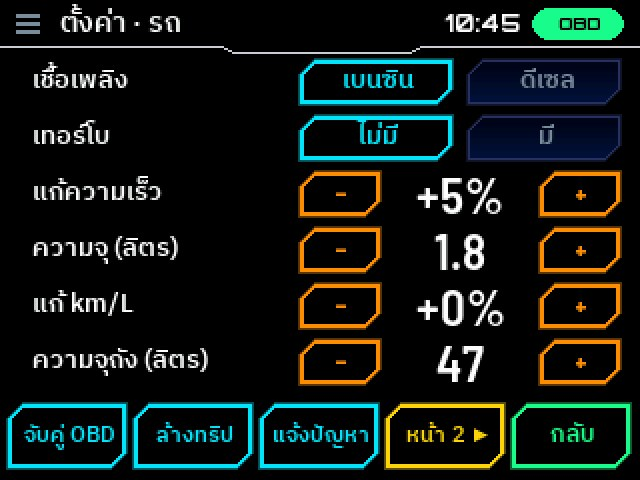
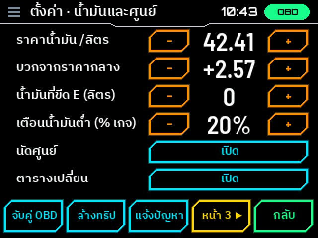
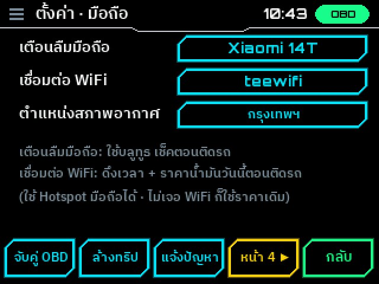
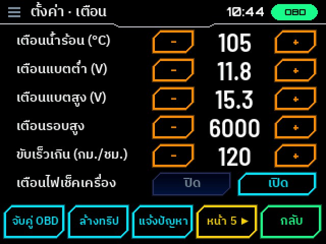
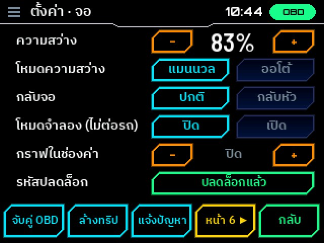
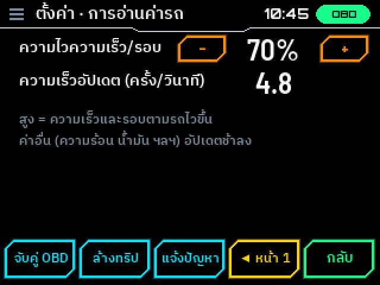
8. ทดลองและปลดล็อก
- ทุกหน้าเกจ ระบบน้ำมัน โค้ดเสีย ฟรีตลอดไป (รวมช่องค่า 3 ช่อง)
- มังกรคู่ใจ และฟังก์ชันมือถือ (ราคาน้ำมัน สภาพอากาศ นาฬิกา เตือนลืมมือถือ) ลองฟรี 15 กม. (ขับจริง) แล้วต้องปลดล็อก: แตะรูปแม่กุญแจมุมบนซ้ายของหน้าหลัก (หรือ ≡ › มือถือ › รหัสปลดล็อก) · ที่ตั้งไว้ไม่หาย ปลดล็อกแล้วใช้ต่อได้เลย
- ส่งเลขเครื่อง DKG-xxxxxx ที่ขึ้นบนจอ มาทาง LINE ได้รหัส 6 หลัก ใช้ได้ตลอด · ลงใหม่/ล้างเครื่องใช้รหัสเดิม (ใช้กับบอร์ดอื่นไม่ได้)
- ข้อมูล (ทริป มังกร ค่าที่ตั้ง) ผูกกับบอร์ด: ไฟล์สำรองเอาไปคืนบนบอร์ดอื่นจะเริ่มใหม่
9. ปัญหาที่พบบ่อย
ต่อรถไม่ได้ / OBD ไม่เขียว
ติดเครื่องรถก่อน · ใช้ ELM327 แบบ Bluetooth ธรรมดา (แบบ WiFi และ BLE ใช้ไม่ได้) · ≡ › จับคู่ OBD แล้วเลือกใหม่ · ปิดแอป OBD ในมือถือที่อาจแย่งต่อ
ค่าบางช่องขึ้น "--"
รถคันนั้นไม่ส่งค่านั้นมา (แต่ละรุ่นส่งไม่เท่ากัน) ไม่ใช่เกจเสีย
ความเร็วไม่ตรงหน้าปัด
หน้าปัดรถส่วนใหญ่โชว์เกินจริง 3–10% เกจโชว์ความเร็วจริงจากกล่อง ปรับให้ตรงหน้าปัดได้ที่ ≡ › รถ › แก้ความเร็ว
น้ำมันไม่ตรงหน้าปัด
ขับไปสักพักเกจจะเรียนรู้ถังเอง · ปรับ "น้ำมันที่ขีด E" และความจุถังให้ตรงรถ · ถ้ายังไม่ตรง ส่งรูปหน้าปัดรถกับจอเกจมาทาง LINE
ไม่มีนาฬิกา / ราคาน้ำมันไม่อัปเดต
ตั้ง Hotspot มือถือที่ ≡ › มือถือ › เชื่อมต่อ WiFi แล้วเปิด Hotspot ไว้ตอนติดเครื่อง (เกจเชื่อมแป๊บเดียวแล้วรีสตาร์ทเอง)
ทัชไม่ตรง
ปิดเปิดเครื่อง แล้วแตะภาพโลโก้ค้างไว้ตอนเปิด = ตั้งทัชใหม่
ตัวหนังสือกลับด้าน (เหมือนส่องกระจก)
จอบางล็อตวาดกลับซ้ายขวา: แตะ ≡ มุมบน แล้วแตะปุ่ม กระจก แถวบนสุด (ปุ่มเดียวที่อ่านออก) จอกลับมาปกติทันที · ติดจอกลับหัว: แถวถัดไป กลับจอ
DRAKO GAUGE · by tee & claude